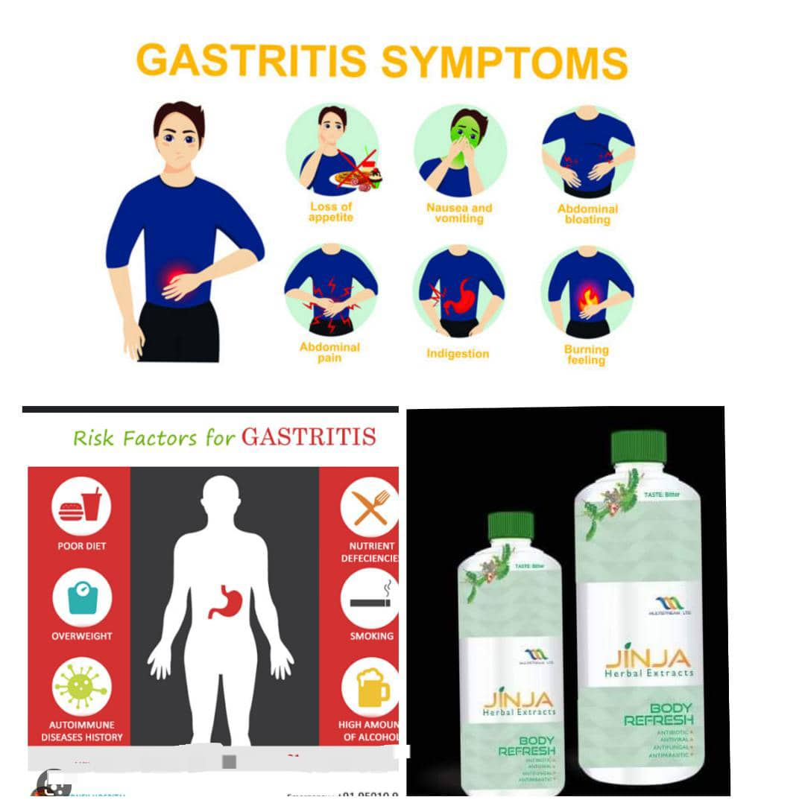

THING YOU NEED TO KNOW WANT KNOW ABOUT JINJA-HERBAL EXTRACT IS HERE
Herbal extract is a product of Multistream TM LTD, a company that specializes in natural health and wellness solutions.Jinja herbal extract is made from a blend of herbs and botanicals that are said to have various benefits for the body and mind. Some of the benefits of jinja herbal extract are:

>
- - It is a natural detoxifier that helps to cleanse the body of toxins and impurities.
- - It boosts the immune system and helps to fight against bacteria, fungi, viruses, parasites, diseases, and STDs.
- - It is rich in antioxidants that protect the cells from oxidative stress and damage.
- - It promotes kidney and liver health by supporting their functions and preventing infections.
- - It treats malaria and typhoid fever, two common diseases in Nigeria and other parts of Africa.
- - It regulates cholesterol, normalizes blood pressure, and stabilizes blood sugar levels, thus preventing or managing cardiovascular and metabolic disorders. - It fights cancer by inhibiting the growth and spread of malignant cells.
- - It helps with weight loss by suppressing appetite and increasing metabolism.
- - It aids digestion by improving the intestinal flora and preventing constipation.
- - It fights inflammation by reducing pain and swelling in the joints and muscles.
- - It boosts male and female fertility by enhancing sexual performance and reproductive health.
- - It relieves arthritis by improving joint mobility and flexibility.
- - It helps cough by soothing the throat and clearing the airways.
- - It eases asthma and allergies by reducing the frequency and severity of attacks.
- - It deals with ulcer by healing the stomach lining and preventing acid reflux.
- - It is hepatoprotective, meaning it protects the liver from damage caused by toxins or drugs.
- - It is good for the treatment of pile (hemorrhoids) by shrinking the swollen veins and relieving the discomfort.
- - It helps in the treatment of stroke by restoring blood flow to the brain and preventing further damage.
- Jinja herbal extract comes in two sizes: small (350ml) and big (750ml).
The small bottle costs 5000 naira while the big bottle costs 10,000 naira.
However, it is cheaper to buy a pack of three big bottles plus one small bottle for 28,800 naira or a pack of 10 big bottles for 78,200 naira or a pack of 22 big bottles for 169,200 naira.
The recommended dosage for adults is 20-30ml, three times daily.
However, pregnant women, breastfeeding mothers, and children below 12 years old should not take jinja herbal extract.
Jinja herbal extract is not only a drink but also a soap. IRU Antiseptic Herbal Soap is another product of Multistream TM LTD that is infused with natural ingredients that have antiseptic and healing properties for the skin. Some of the benefits of IRU Antiseptic Herbal Soap are:
- - It treats skin infections such as ringworm, acne, eczema, blackhead, sunburn, and body odor.
- - It restores damaged skin tissues and corrects chemical reactions caused by harsh products
- - It helps in wound healing and minor burns.
- IRU Antiseptic Herbal Soap can be used daily to wash the face and body. It costs 1000 naira per bar.